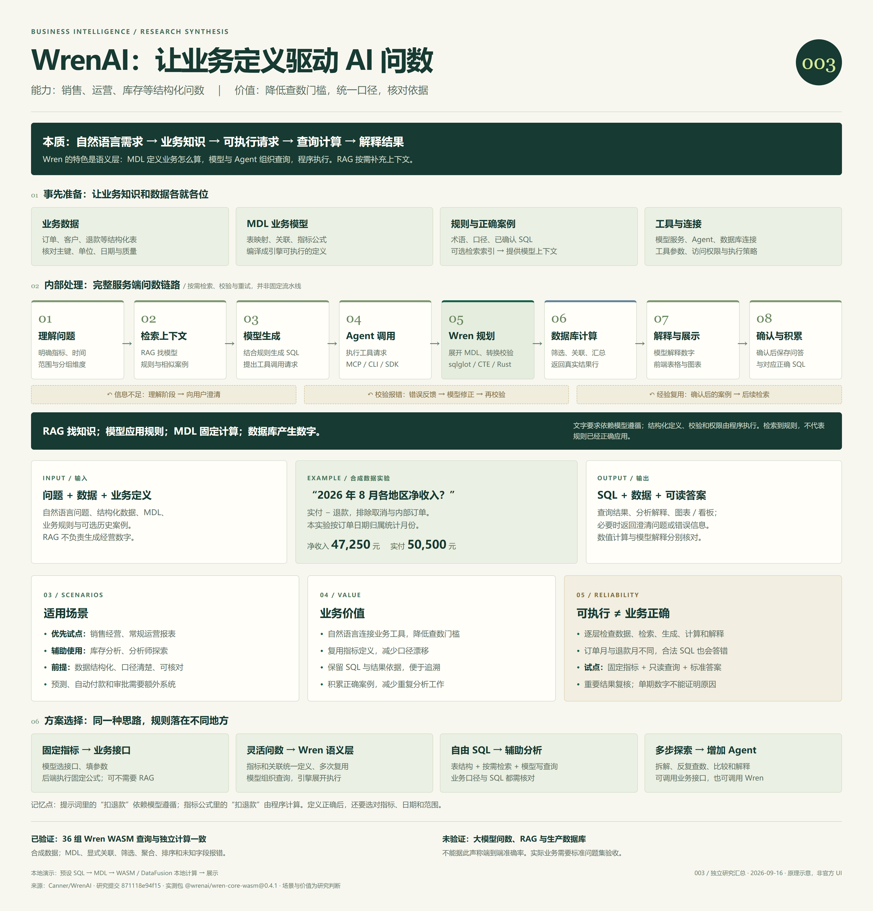

把业务问题接到数据查询
围绕结构化数据查收入、排名、趋势、库存等。核心提供业务模型和查询工具；自然语言理解与图表由模型、Agent 和应用配合完成。
WrenAI 是面向 Agent 的业务问数基础设施。模型理解问题，MDL 定义业务怎么算，Wren 展开并规划查询，数据库返回真实数字，上层应用解释和展示。
围绕结构化数据查收入、排名、趋势、库存等。核心提供业务模型和查询工具；自然语言理解与图表由模型、Agent 和应用配合完成。
准备 MDL 和业务知识 → 按需检索 → 模型生成查询 → Agent 调工具 → Wren 展开定义 → 数据库计算 → 返回答案。
降低查数门槛，把净收入等定义统一管理，减少重复编写查询。保留 SQL、筛选条件和结果，让人能检查答案依据。
共同思路是理解需求、补充知识、形成可执行请求、查询并解释。Wren 的特色是语义层；RAG 和复杂 Agent 按需要加入。
优先场景：结构化数据、口径明确、反复发生的销售 / 运营 / 库存分析。准备：数据连接、指标定义、模型与工具、标准答案。边界：完整问数准确率尚未实测；预测、文档解析和业务交易需额外能力。
WrenAI 展示了一种落地方式：给模型足够的业务知识，将关键计算写成明确的定义，再通过工具执行操作、核对结果。可靠性来自这些环节共同工作。
字段含义、术语、枚举、业务口径和正确案例，帮助模型理解问题。
MDL 固定表映射、关联和指标公式，让计算方式可以审核和复用。
模型提出 SQL 或工具请求；Agent 真正调用，Wren 与数据库处理。
保留条件、SQL、结果和错误。问题不清楚时追问，确认后积累案例。
数据与结构：整理业务表 → 定义 MDL → 编译给引擎使用。
文字与案例：规则、术语、正确 SQL → 可选分块和语义索引 → 按问题检索给模型。
RAG 通常检索模型说明和业务知识；经营数字仍来自数据查询。
文字要求依赖模型遵循；结构化计算、校验和数据库权限由程序执行。
金额、排名、占比尽量由数据库计算；模型结合问题与口径解释数字。只有当期收入，就不足以证明“收入增长”，更不能直接推断增长原因。
已有结构化数据，业务口径可以讲清楚，
答案能通过查询计算出来。
地区收入、客户贡献、退款占比、月度经营趋势。
输入：订单 / 客户 / 退款活跃、留存、续费和流失；先定义用户与统计周期。
输入：事件 / 账户 / 订阅库存周转、缺货清单、交付时长和渠道对比。
输入：库存 / 出入库 / 发货这些是基于架构的适用性判断。本项目实测销售案例。扫描件识别、自由文档问答、预测算法和自动下单需要其他能力配合；Wren 的核心是分析查询。
这里给出条件与边界，不是对业务系统的自动测评。
这套架构有工程价值，但“引擎算对 SQL”与“系统答对用户问题”需要分别验证。不能把底层的成功查询直接解释成端到端问数准确率。
| 环节 | 可能错在哪里 | 怎样验证 |
|---|---|---|
| 数据与 MDL | 退款归属月、单位或 JOIN 粒度不对 | 业务负责人确认口径；与已有报表、原始记录对账 |
| RAG 检索 | 漏掉适用规则，或找到过时、冲突的说明 | 检查检索片段的相关性、版本与适用范围 |
| 模型生成 | 日期、分组、过滤条件不符合问题 | 用真实问题和标准答案核对结果，并检查 SQL |
| 引擎与数据库 | 字段和语法通过，但业务口径用错 | 校验、执行测试与业务验收结合；不能只看是否报错 |
| 结果解释 | 擅自添加增长、原因或建议 | 逐项核对结论是否有返回数据支持 |
两种查询都能执行，跨月退款时却会得到不同收入。需要事先明确口径，再用标准结果验收；语法检查无法替你做这个业务选择。
合成订单上的 MDL 计算字段、显式关联、筛选、聚合、排序与字段错误；桌面和手机展示。
查看实际 SQL 与结果 ↗模型理解、RAG 命中、SQL 自动生成与修正、模型解释、生产数据库和业务权限，尚未端到端实测。
固定指标 + 少量核心表 + 只读查询 + 可核对的标准答案。先验证日期、退款、多表重复计数、歧义追问和空结果；重要结果保留人工复核，再逐步扩大范围。
沿着“2026 年 8 月各地区净收入是多少？”这一个问题，查看每一步接收什么、如何处理、把什么交给下一步。
“收入”口径或日期不清楚 → Agent 追问 → 用户补充 → 再检索 / 生成。
字段不存在或方言错误 → 工具返回错误 → Agent 获取定义 → 模型修正 → 再校验。
能执行却不符合口径 → 核对源数据和 MDL → 人工确认 → 重跑；只保存确认过的案例。
检索提供相关知识，模型生成操作，Agent 执行工具，Wren 展开业务定义，计算层给出数字，应用把数字变成可读的表格和图表。每一层都要有明确输入和验收依据。
到下方对照实际 SQL 与结果 ↓39 笔合成订单 · 6 个虚构客户。切换问题、时间、地区和收入口径，对照同一组数据的答案。
问题与 SQL 使用预设模板，未调用大模型或 RAG。默认显示真实 Wren 引擎的已验证输出；可启动浏览器引擎重新执行。
| 地区 | 净收入（元） |
|---|
正在加载已验证结果。
这部分由 Wren 引擎解释执行。文字规则则交给 Agent 阅读，不能代替权限和数据库约束。
这里使用显式 JOIN；未验证自动关系展开。生产接入时，这段 SQL 由模型结合上下文生成，并经 Agent 调用。
按需下载约 72 MB 的 WebAssembly 模块。在当前浏览器处理合成数据，无需模型密钥。
查看全部已验证 SQL 与结果 ↗ · 查看合成数据与模型定义 ↗
实测覆盖计算字段、显式关联、聚合、时间和地区筛选、前五排名、未知字段报错。未实测自然语言准确率、向量检索、生产数据库或企业权限。
数据、口径、模型、连接、验收样题。
最主要的工作是把业务定义整理清楚。
准备数据库或结构化文件，核对主键、日期、金额单位、空值和重复记录。
明确收入是否扣退款、时间归属、有效订单、客户身份和统计粒度，并由业务负责人确认。
映射表与字段，定义计算指标和关联；保存术语解释、业务规则及已确认的问答 SQL。
选择 MCP 或 Python SDK。准备具备工具调用能力的模型、Agent、数据库连接和凭据。
准备代表性的业务问题和正确结果，覆盖歧义、空结果、退款、跨月和多表重复计数。
用户问题 + 数据库连接 + MDL + 业务规则 + 可选历史案例。原始业务数据位于数据库；检索提供相关知识。
SQL、查询数据表、自然语言分析，以及由上层应用生成的图表 / 看板。遇到缺信息或错误，也可能输出澄清问题或错误信息。
自然语言需求 → 补充业务知识 → 可执行请求 → 查询计算 → 展示解释。帮助模型理解的资料，与程序必须执行的规则，要分开设计。RAG 检索到规则，不代表规则已经生效。
模型选择接口并填写月份、地区等参数，后端执行固定查询和公式。问题类型少时容易控制；可不使用 RAG。
例：查净销售额 → sales_summary(月份, 地区)提供表结构、术语和正确案例，模型自行编写查询；表和知识很多时按需加入 RAG。口径理解和 SQL 都需要核对。
适合简单库试验、分析师辅助查询模型组织查询，语义层展开已经定义的指标和关联。适合多人共享口径、多种维度组合；前期需要建模和维护。
净收入定义一次，在多个问题中复用拆解问题、多次查询、比较和解释。可以调用固定接口或 Wren；需要逐步核对结果，控制成本和执行范围。
固定报表也可直接使用 BI，无需大模型写在提示词里，依赖模型转成正确查询；写进 MDL 指标或业务接口里，由程序展开和执行计算。模型仍可能选错指标或日期，因此“能执行”不等于“回答了正确的问题”。这些差异影响可靠性、灵活性和维护成本。
| 产品 / 库 | 路线与定位 | 选型时看什么 |
|---|---|---|
| Cube / Cube Core ↗ | 集中管理指标、关联和访问规则的语义层 | 适合多应用复用口径；区分开源 Core 与完整产品功能 |
| SQLBot ↗ | 大模型 + RAG + SQL，提供问数和图表应用 | 适合先体验完整问数流程；术语、SQL 示例仍需整理 |
| Snowflake Cortex ↗ | 语义视图、指标和示例支持自然语言查询 | 面向 Snowflake 数据；官方目前建议转向 Cortex Agents |
| Databricks Genie ↗ | 基于可信数据、业务规则和查询示例的问数产品 | 适合已经采用 Databricks 的团队 |
| LangChain / LangGraph ↗ | 查表结构、生成、执行与修正 SQL 的开发框架 | 业务口径、权限与界面需要自己设计 |
| Vanna ↗ | 围绕 SQL 工具、检索和用户上下文的 Agent 库 | 仓库已于 2026-03-29 归档；可研究架构，选型需考虑维护 |
官方资料核对日期：2026-09-16。产品对比为文档研究，未做横向运行或准确率测试。
按“本质 → 能力与准备 → 内部处理 → 输入输出 → 场景与价值 → 方案选择”阅读；下次从这张图恢复完整理解。

研究基准：871118e94f15；运行依赖：@wrenai/wren-core-wasm@0.4.1。npm 构建与该提交不假定为完全同一版本。本页为独立研究展示，非 Wren 官方产品界面。
当前开源主线面向 Agent；旧聊天产品已保留在 legacy/v1。商业产品的用户 / 组权限、行列级安全和完整 BI 界面不在本实验覆盖范围。
{kind=link}